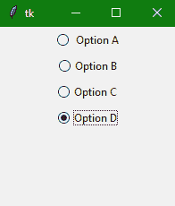
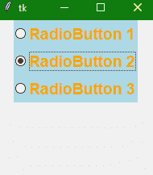

Tkinter Radiobutton小部件
在本教程中，我们将介绍 Python 中的 Tkinter Radiobutton 小部件，当我们想要在应用的 GUI 中添加一个单选按钮时会用到它。
Tkinter 单选按钮小部件用于实现多项选择选项，这些选项主要是在用户输入表单中创建的。
该小部件为用户提供多个选项，允许用户从给定选项中仅选择一个选项。因此，它也被称为在 Python 应用中实现一对多选择。
还有，不同的方法也可以和 radiobutton 关联。
您也可以在单选按钮上显示多行文本和图像。
每个单选按钮为特定的变量显示一个单值。
您还可以跟踪用户对单选按钮的选择，因为与单个变量相关联
Tkinter Radiobutton Widget
单选按钮小部件的语法如下:
W = Radiobutton(master, options)
在上面的语法中，master参数表示父窗口。您可以使用许多options来更改单选按钮的外观，这些选项被写成逗号分隔的键值对。
Tkinter Radiobutton Widget 选项:
以下是与 Tkinter 单选按钮小部件一起使用的选项:
| 选项名称 | 描述 |
|---|---|
anchor |
该选项用于表示文本在小部件中的确切位置，在小部件包含比文本要求更多的空间的情况下。该选项的默认值为“中心”。 |
bg |
该选项代表小部件的背景颜色。 |
activebackground |
该选项代表微件聚焦时的背景颜色。 |
activeforeground |
该选项代表微件聚焦时的字体颜色。 |
borderwidth |
该选项用于表示边框的大小。 |
bitmap |
如果您想要在小部件上显示图形，那么您可以将该小部件设置为任何图形或图像对象。 |
command |
该选项是用来设置程序，当单选按钮的状态改变时，每次必须调用该程序。 |
cursor |
该选项将鼠标指针转换为指定的光标类型，并可设置为箭头、点等。 |
font |
该选项用于表示小部件文本的字体类型。 |
fg |
该选项用于表示小部件文本的前景色。 |
height |
该选项表示小部件的垂直尺寸 |
width |
该选项表示小部件的水平尺寸，用字符数表示。 |
padx |
该选项代表小部件的水平填充。 |
pady |
该选项表示小部件的垂直填充 |
highlightcolor |
该选项用于表示小部件处于焦点下时焦点高亮的颜色 |
highlightbackground |
当部件不在焦点下时，该选项用于表示焦点高亮的颜色。 |
image |
如果您希望在小部件上显示图像，那么该选项将设置为图像而不是文本 |
justify |
该选项用于表示多行文字的对齐。默认值为中心。其他值为左，右。 |
relief |
该选项用于表示边框的类型。默认值为平。 |
selectcolor |
该选项表示选择时单选按钮的颜色 |
selectimage |
该选项表示当选择时要在单选按钮上显示的图像 |
state |
该选项用于表示单选按钮的状态。收音机按钮的默认状态是正常。您也可以将状态设置为禁用，以使收音机按钮无响应。 |
text |
该选项指示要在单选按钮上显示的文本。 |
textvariable |
该选项用于控制小部件所代表的文本。textvariable可以设置为需要在小部件上显示的文本。 |
underline |
该选项可以设置为现有的数字，以便指定字符串的第 n 个字母将带有下划线。默认值为-1，表示无下划线 |
variable |
该选项也称为控制变量，用于跟踪用户的选择。因此，该变量在所有单选按钮之间共享。 |
value |
当用户打开时，每个单选按钮的该选项被分配给控制变量。 |
wraplength |
该选项用于将文本换行到所需的行数，只需将选项设置为所需的行数，使得每行仅包含该数量的字符。 |
Tkinter 单选按钮小部件方法:
以下是 Tkinter Radiobutton 小部件使用的各种方法:
| 方法名称 | 描述 |
| deselect() | 此方法用于取消选择或关闭单选按钮 |
| select() | 此方法用于选择单选按钮 |
| invoke() | 此方法通常用于在单选按钮的状态发生变化时调用函数。 |
| flash() | 这种方法通常用于在单选按钮的正常颜色和活动颜色之间闪烁多次。 |
Tkinter 单选按钮小部件示例
下面我们有一个单选按钮小部件的基本示例。让我们看看 Radiobutton 小部件的代码片段:
#firstly ImportTkinter module
from tkinter import *
from tkinter.ttk import *
# Creating parent Tkinter window
win = Tk()
win.geometry("200x200")
# let us create a Tkinter string variable
# that is able to store any string value
v = StringVar(win, "1")
# here is a Dictionary to create multiple buttons
options = {" Option A" : "1",
"Option B" : "2",
"Option C" : "3",
"Option D" : "4"
}
# We will use a Loop just to create multiple
# Radiobuttons instaed of creating each button separately
for (txt, val) in options.items():
Radiobutton(win, text=txt, variable=v, value=val).pack(side = TOP, ipady = 4)
mainloop()
上面的代码将给出以下输出:

注意: 如果你自己尝试上面的代码片段，那么你会看到在输出中你一次只能选择一个按钮。
另一个例子
下面是这个小部件的另一个例子，我们将使用 style 类向 radiobutton 添加样式:
from tkinter import *
from tkinter.ttk import *
win= Tk()
win.geometry('200x200')
v = StringVar(win, "1")
# we will add Style class to add style to Radiobutton
style = Style(win)
style.configure("TRadiobutton", background = "light blue",
foreground = "orange", font = ("arial", 14, "bold"))
# Dictionary to create multiple buttons
values = {"RadioButton 1" : "1",
"RadioButton 2" : "2",
"RadioButton 3" : "3"
}
for (text, value) in values.items():
Radiobutton(win, text = text, variable = v,
value = value).pack(side = TOP, ipady = 3)
mainloop()

上面的代码将改变字体样式以及背景和前景色。在上图中TRadiobutton用在样式类中，它自动将样式应用于所有可用的单选按钮。
总结:
在本教程中，我们了解了 Radiobutton 小部件，它用于创建多个选项，从中可以选择一个选项。这主要在我们创建用户表单时使用，比如注册表单。